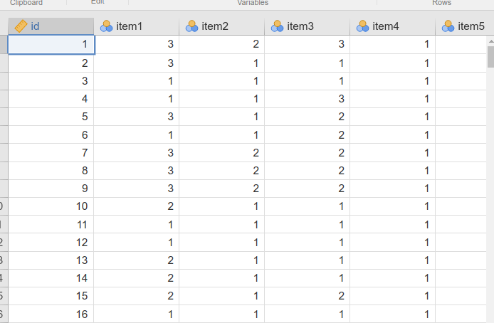
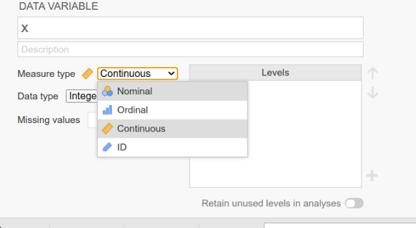
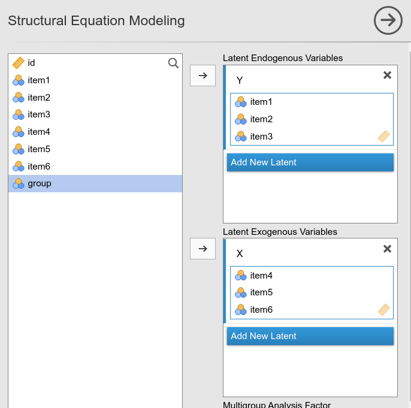
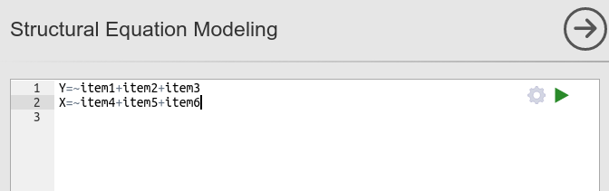
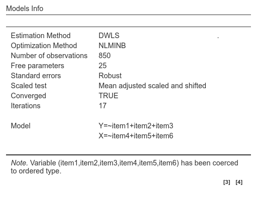
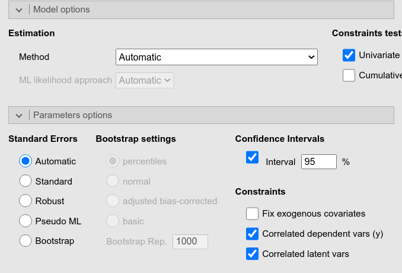
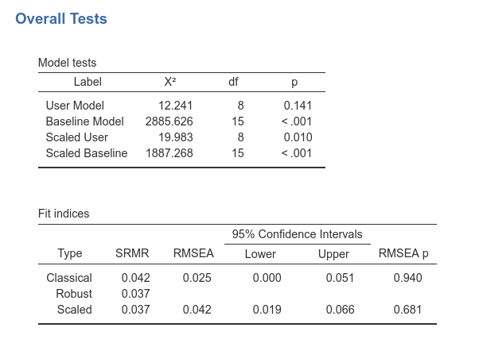
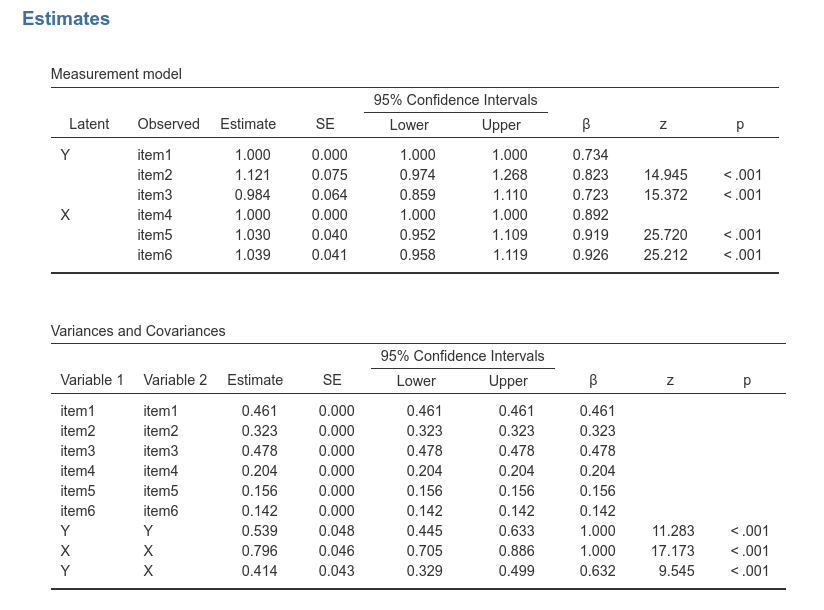
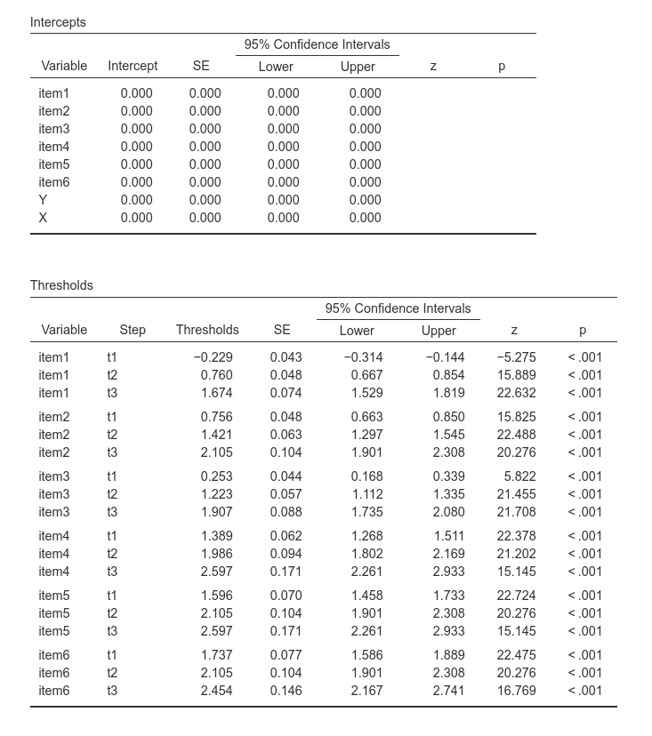
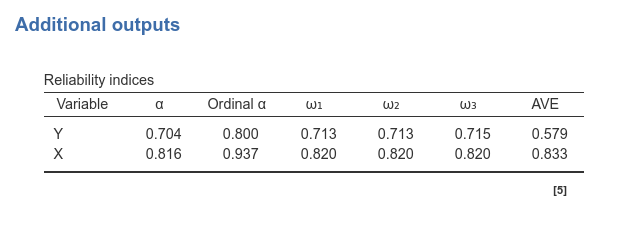

Ordinal observed variables
keywords SEM, ordinal variables, ordered variables, categorical variables, lavaan, SEMLj
0.5.0
Draft version, mistakes may be around
In this example we show how to estimate a SEM with ordered observed variables using SEMLj.
We show input of both SEMLj interactive (GUI) sub-module and the syntax sub-module. Output tables are the same for the two sub-modules.
Much of the output that SEMLj produces is labeled as it is in lavaan R package output, so lots of information can be found in lavaan help and tutorials
The data
For this example we are going to use a simulated dataset, present in the jamovi data library after installing SEMLj, in which we found six items. They are supposed to reflect two latent variables. As you open the data, jamovi recognizes the items as categorical variable, as shown by the little icon in the column name label.

These items will be transformed automatically in ordered variables by SEMLj. In general, SEMLj considers as ordered variables (ordinal) all observed variables that are defined as nominal or ordinal in the datasheet. If one has a variable that jamovi recognizes as continuous and wishes to treat it as ordinal in SEM, one simply changes its type in “Ordinal” in jamovi data tab.

The model
We start with a measurement model (CFA), in which item 1 to 3 load to the first latent variable (\(Y\)), and item 4 to 6 load to the second latent variable (\(X\)).
Interactive
In SEMLj interactive module, we define the two latent variables and fill their fields with the corresponding observed variables, as for any other SEM with latent and observed variables.

Syntax
In SEMLj syntax module, we issue the following lavaan syntax.

Output
As soon as we set the input, we obtain the whole set of results
tables. It is interesting to check the Info Table.

First, notice that the note informs us that items 1 to 6 type has
been changed into ordered type, which is another way to say
ordinal. Thus, the module knows that the variables are not
to be considered continuous measures, and thus the appropriate
estimation method is used. Indeed, we can see in the
Estimation Method row of the table that lavaan
used the DWLS method, meaning Diagonally weighted least
squares. The method is appropriated for ordinal observed variables,
implying that the estimates are based upon polychoric correlations.
Furthermore, a scaled chi-square test is used as the omnibus test. Which
scaled test is used is indicated in the Scaled test row. By
default, it is the Mean adjusted scaled and shift test here details from
lavaan. Finally, we can see that the standard errors are computed as
robust standard errors.
This is the automatic setup one obtains when the model involves ordered variables. Possible changes in the combination of estimation method, scaled omnibus test and standard errors can be done by changing the estimation method and standard errors method in the input panel (see SEMLj computation details for more details).

For instance, selecting Robust Weighted Least Squared (WLSM)
implies robust standard errors and the Satorra-Bentler mean adjusted
omnibus test. The adjusted test is always referred to as “Scaled test”
in the Model Tests table, but the Info table
signals which test is used depending on the estimation method
selected.
If an estimation method is selected and it is not appropriate, like
ML for ordered variables, an error is issued.
In order to let lavaan choose the appropriate
combination of estimator, standard errors method and scaled test, it is
recommended to leave the standard errors method equal to
automatic. Obviously, if you know what you’re doing, you
are free to set the options as you like.
Model Fit

As compared with a standard SEM, with ordinal variables we obtain the
classical omnibus test and the scaled test. They are repeated for the
user model and the baseline model (Model Tests). We also
get different fit indices, namely the robust version and the scaled
version. The scaled version is computed using the same scaling mechanism
used for the omnibus chi-square.
Structural parameters

Parameters estimates tables are not affected by the presence of ordinal variables. That is, the parameters are estimated with the appropriate method, but our interpretation does not really change because of ordinal variables.
Thresholds
The other table that is affected by the presence of ordinal variables is the intercepts and thresholds table.

Intercepts are set to zero, because ordinal variables have thresholds. Thresholds, for each variable, are intercepts computed for each step of the ordinal observed variable. For an observed variables with 4 steps (levels), we have 3 thresholds. Their interpretation is usually not crucial in SEM.
Reliabilities

Finally, in the presence of ordinal observed variables and latent variables, the reliability table offers an additional index, namely Ordinal \(\alpha\). Details can be found in semTools help page.
Examples
Some worked out practical examples can be found here
Examples
Some worked out practical examples can be found here
Comments?
Got comments, issues or spotted a bug? Please open an issue on SEMLj at github or send me an email